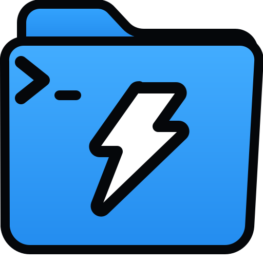
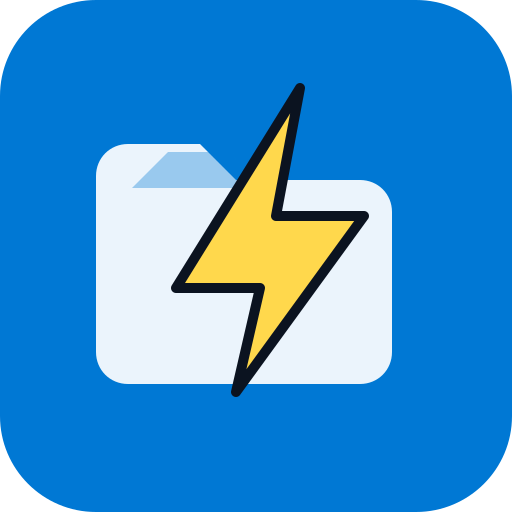
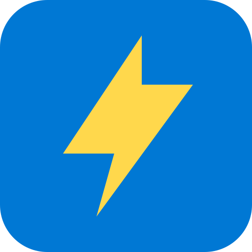
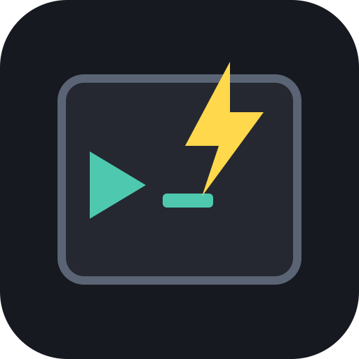
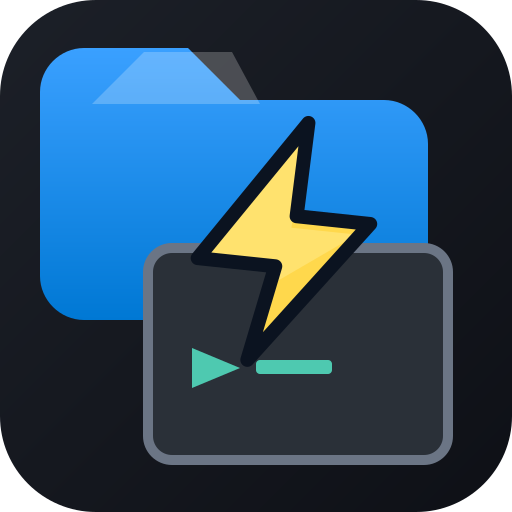

A - Terminal + Folder + Bolt (production micro)
Source: Assets/logo-micro.svg. Used for StoreLogo and CmdPal.
16

20
24
32
50
Quick ShellOpen saved folders in any terminal you use
qs
Micro variants are designed for Command Palette list rows (16–24px). Compare against the current production logo. Squint at the CmdPal row mocks — the icon should read instantly.
Source: Assets/logo-micro.svg. Used for StoreLogo and CmdPal.

Higher pop on dark UI. White folder on accent blue tile.

Maximum legibility. Loses folder/terminal story but reads “fast.”

Terminal frame + chevron. More detail — test if 16px still works.

Full-detail logo scaled down — reference for the “crushed” problem.
Keeps folder → terminal → bolt story with simplified bolt, brighter terminal border, and more inset margins.
